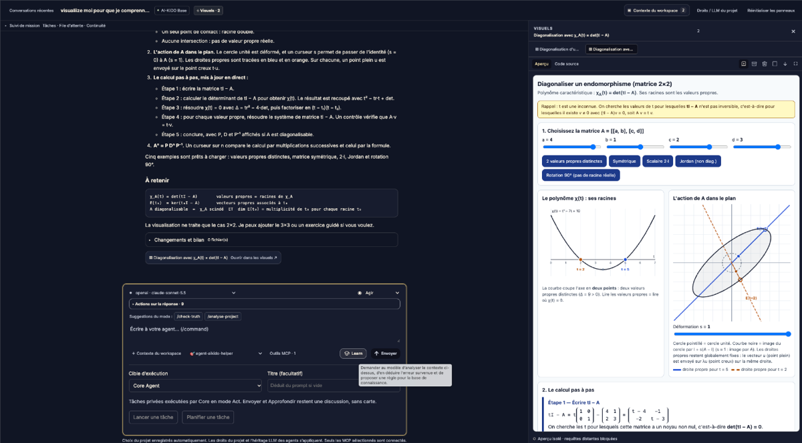

You correct your assistant for the second time on the same point: the wrong file, a missed check, an ignored convention. Next week it will do it again, because the lesson only lived in that conversation. Yet AI-KIDO has never been a frozen method: from the start, its hard points, its Truth Tables and the Memory Bank rules are written, reviewed and corrected by the people of the project, and agents read them to comply. That is AI-KIDO’s self-learning: the knowledge base evolves with what you teach it.
You guide, the command assists
The learning rule did not begin with /learn. Introspection and continuous improvement already belong to AI-KIDO’s original foundations, documented in the first public baseline. You teach, correct and improve the knowledge base; the command gives this practice a shorter, repeatable route.
/learn arrived as reinforcement with AI-KIDO 1.5.2. It does not replace that mechanism and decides nothing on its own: it helps you guide your agents and your knowledge base by turning the corrections of a session into short rules. You read them, you choose which ones to keep, and they are stored in prompts/gen/learned.md, a file read at the start of every request.
What you type, what you see
A named command also becomes an interface shortcut. In the Tatami Agent development interface below, the Learn button sits beside the composer. Its tooltip explains the learning action: review the context, identify an error and propose a rule for the knowledge base. The conversation, command suggestions and interactive visualization remain visible around it: learning belongs to the same workspace where you exchange, inspect and guide the assistant. You can also type /learn in the composer to select the project command; choosing that suggestion alone neither starts work nor saves a rule.


This is a preview of Tatami Agent, the AI-KIDO LLM CLI interface under development. The public npm CLI of the method installs and updates the Memory Bank; it is a different tool. The same written command can guide an assistant that loads the AI-KIDO instructions, while each host provides its own interface.
After a session where you had to steer the assistant back, you type /learn, with a hint in quotes if you like. The assistant rereads the conversation, shows its proposals, then asks which ones to keep. The exchange below is an illustration.
- You/learn "I had to remind it to run the tests before pushing"
- AssistantI reread the session and I propose one rule: L-build-001, run the tests before pushing. It applies before any push to the main branch and asks to read the test result. Do you validate?
yaccepts all,nrejects all,1keeps rule 1,e1rewords it. - Youy
- AssistantRule stored in
prompts/gen/learned.md. It will be read at the start of the next request.
What it looks for
Each finding carries a type, so a rule can say where it comes from. There are six: error, correction, preference, workflow, gap and conflict. Without --type, all of them are scanned.
- 6learning types
- 3steps: analyze, propose, commit
- 40lines of rules at most in learned.md
What a rule looks like
Every rule has the same four parts: when it applies, what to do, how to check it, and why it exists. The example below is an illustration, not a rule from a real project.
### L-build-001 — Run the tests before pushing
- **When**: before any push to the main branch
- **Rule**: run the test command and read its result before pushing
- **Check**: the last test run in the session is green
- **Why**: a broken build reached the main branch (evidence: user correction)Why the file stays small
learned.md is read at the start of every request, together with the fundamental rules, so it is kept cheap to read. Beyond 40 lines of rules, /learn moves the detail into scoped files that are opened only when their trigger words match the task.
Try it
- Install or update the method using the installation guide. /learn has shipped since 1.5.2; the rule file ships empty and updates preserve the rules you add.
- After a session where you corrected the assistant, run
/learn --dry-runto see the proposals without writing anything. - Read each proposed rule, then accept it, reword it or refuse it. Only the rules you validate are stored.
- Later, run
/learn --reviewto confirm, retire or merge rules.